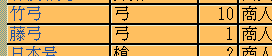

string カスタム::On_家宝種類名表示直前(int 家宝番号, string 家宝名) {
return "";
}

string カスタム::On_家宝種類名表示直前(int 家宝番号, string 家宝名) {
if ( 家宝名 == "孫子" ) {
return "軍学書";
}
else if ( Is_正規表現マッチ(家宝名, ".+弓$") ) { // 自作家宝名で、最後の文字が「弓」のものは全て
return "弓";
}
// 変更しない場合""
return "";
}